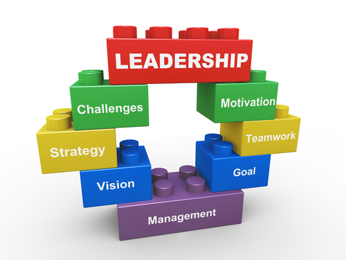
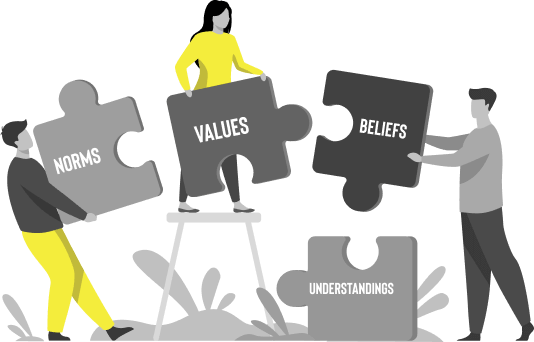
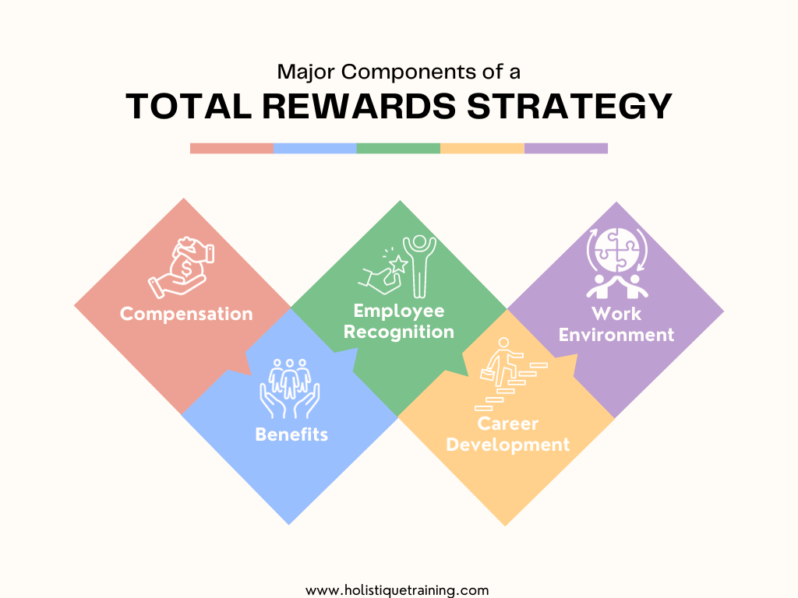

Quote
"Leadership is the art of getting someone else to do something you want done because he wants to do it."-Dwight D. Eisenhower
Performance Management
Performance management is a process that is used to change the outcomes of the work environment. This can improve many things for a company such as job satisfaction and the quality of work. The components of performance management are to define goals, monitor, evaluate, and provide consequences. Although MYDAD has a great relationship with his managers, one problem his managers can improve on is to help MYDAD’s work exhaustion due to the physical labor of his job. One recommendation I suggest is for his managers to provide total rewards. Total rewards contain benefits, growth, and a motivating work environment for employees. Steps to get there would be going back to the performance management process. The second step is to monitor and provide feedback where Managers can look at MYDAD’s work progress and try to find the cause of his problem by figuring out if it’s external or internal. Once they find the cause, the next step is to deliver feedback. Managers should communicate with MYDAD privately about his exhaustion while they also actively listen. The final step is to provide rewards and consequences which is where total rewards would be implemented. They can allow him to take longer breaks during his shift or provide paid time off. Following these steps will increase MYDAD’s job performance along with maintaining a good relationship with him.
Leadership
Vic has a problem with his manager. He states that he strongly dislikes the “boss’s outdated management techniques like instilling fear over communication”. Our recommendation is that the HR department makes his manager research and implement transformational leadership, specifically focusing on one of the four key behaviors, individualized consideration. This will help create a stronger relationship “that provides support, encouragement, empowerment, and coaching to employees” (Kinicki, 530). To successfully enact this recommendation, HR will require all managers to go through a behavior assessment based on the four key behaviors of transformational leadership. Once that is complete managers will get detailed explanations on how to increase those behaviors. For Vic’s manager, she struggles in individualized consideration because she installs fear over communication, destroying any personal relationship. She can fix this by understanding what her employees need and creating ways to help them grow, giving constructive feedback and framing mistakes as opportunities, and talking to employees one-on-one about their interests and learning about them.
Organizational Culture
Using the competing values framework and looking into the work environment of Boomshakalaka, the organizational culture would fall under clan culture. Clan culture consists of collaboration, trust and support to employees. Because Boomshakalaka has a good work culture, one recommendation to improve it would be to add another type of culture, specifically adhocracy. Adding this will build employee relationships to be more stronger. Communication will improve and Boomshakalaka would also become more comfortable to talk and open up often. Steps to enact adhocracy culture into Boomshakalaka’s work space could be implementing its characteristics to the workplace such as innovation and creativity. First, Boomshakalaka and other managers could set up an example of encouraging innovation in hopes it influences employees to do the same. The next step could be to allow workers to have creative control on how to approach their tasks occasionally. Eventually, workers will adapt to the additional culture and create a better organizational culture.
Job Rotation
Vic should be given the opportunity to try out different jobs in the department he works in. By the manager implementing job rotation, it could help solve the problem of him finding meaning in his work. Allowing him to try different roles could help him find one that aligns more with his values and is meaningful for him. This would increase his motivation and therefore his job performance. To successfully enact this recommendation the head of the manufacturing department could create a rotational program. The program would involve working in three to five different areas of manufacturing for a span of three to six months. After the program is completed managers could evaluate performance and communicate with employees on what they enjoyed the most, with the goal of placing them in an area that they enjoy and are skilled at.
Total Rewards System
Several interviewees struggle with the dissatisfaction of their salary, leading to lower levels of motivation and an increased chance in turnover. This can be fixed by implementing a total rewards system. A total rewards system encompasses monetary and non-monetary rewards. It can increase motivation by offering rewards other than salary. To successfully enact this recommendation employees can communicate what they value in a survey or to managers directly. This information can be used to create non-monetary rewards such as discounts at local restaurants, employee wellness programs, or child-care help. This way the employees feel they are getting more out of their job.